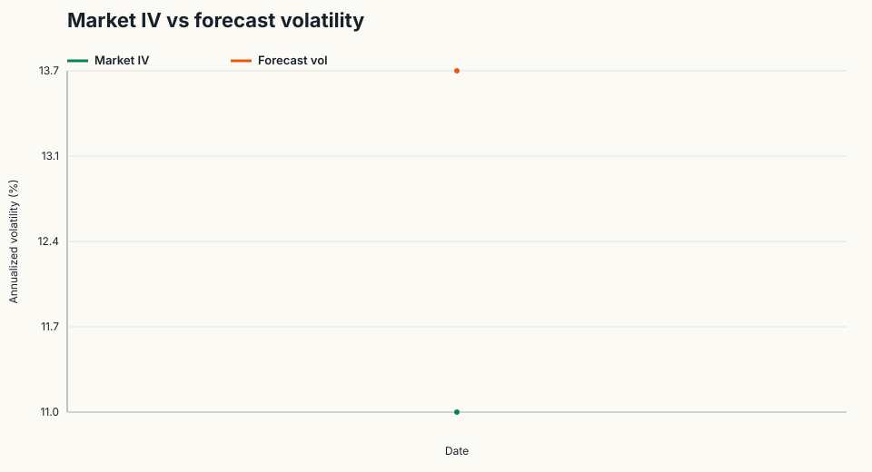
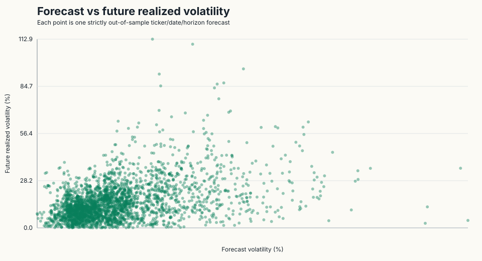
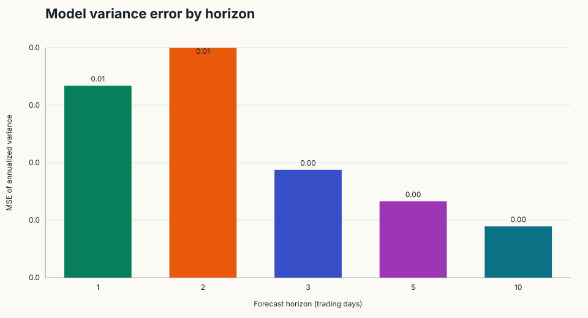
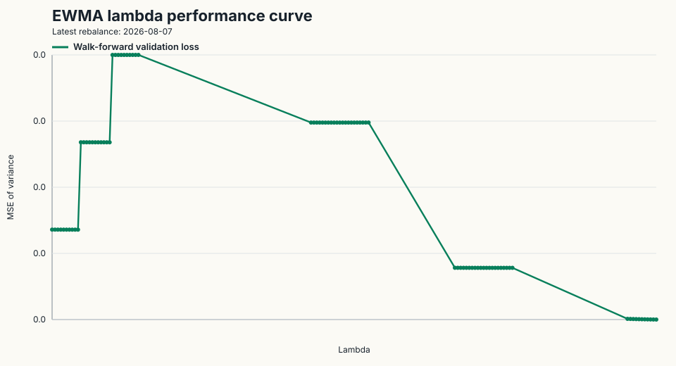
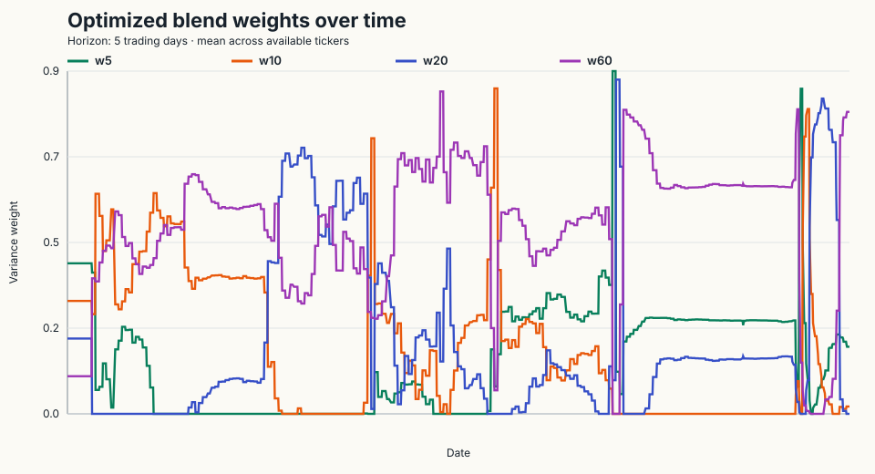
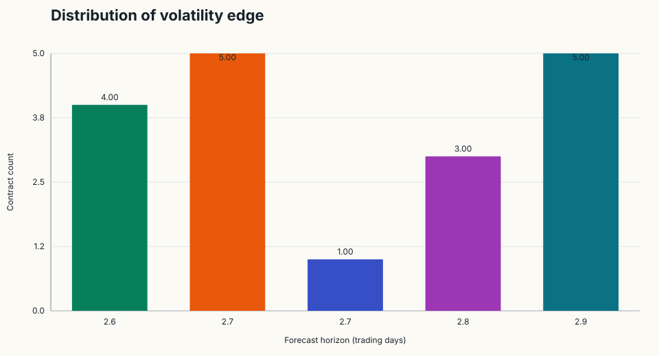

Volatility research diagnostics

Market Iv Vs Forecast Volatility
Forecast Vs Future Realized Volatility
Model Error By Horizon
Ewma Lambda Performance Curve
Weighted Blend Weights Over Time
Vol Edge Distribution